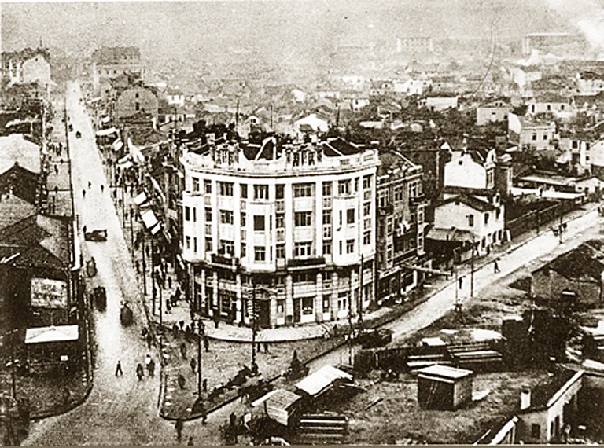
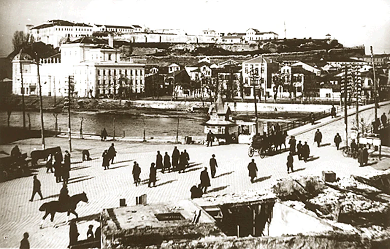
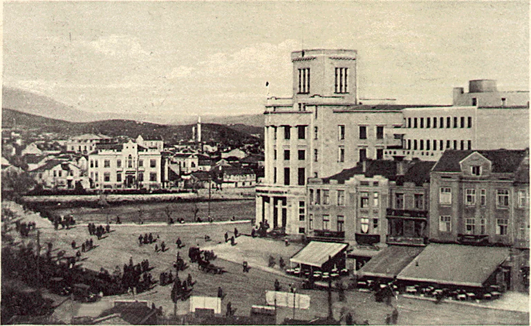
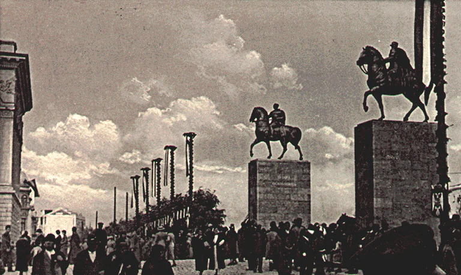
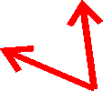
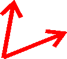

Γιορτή - πλατεία
- Σενάριο
- Άτσο Πετρόφσκι και Άκι Παβλόφσκι
- Σκηνοθεσία
- Τράιτσε Πόποφ
- Οπερατέρ
- Κίρο Μπιλμπιλόφσκι και Τράιτσε Πόποφ
- Έτος
- 1949
- Διάρκεια
- 00:19

Η πλατεία της πόλης των Σκοπίων, φωτογραφημένη γύρω στα μέσα του 19ου αιώνα.

Τα Σκόπια στα τέλη του 19ου αιώνα. Η πλατεία με το Τζαμί Μπουρμαλί και μερικά κτίρια γύρω του. Ένας ακόμη αδιαμόρφωτος δρόμος. Τόπος συγκέντρωσης αγωγιατών εμπορευμάτων με βοϊδάμαξες.

Η πλατεία στα τέλη του 19ου, αρχές του 20ού αιώνα. Στο πρώτο πλάνο πιάτσα αμαξών και κάρων. Δεξιά εκτείνονται σε δύο σειρές τα κτίρια που βρίσκονταν ακριβώς μπροστά στην Πέτρινη γέφυρα. Πίσω τους το Τζαμί Μπουρμαλί. Αριστερά του έχουν χτιστεί κατοικίες, και ακριβώς πίσω τους φαίνεται τμήμα της τράπεζας. Στο βάθος υψώνεται το φρούριο των Σκοπίων - Καλέ με τον στρατώνα.

Η πλατεία στα τέλη του 19ου, αρχές του 20ού αιώνα. Στο πρώτο πλάνο πιάτσα αμαξών και κάρων. Δεξιά εκτείνονται σε δύο σειρές τα κτίρια που βρίσκονταν ακριβώς μπροστά στην Πέτρινη γέφυρα, όπου στεγάζονταν εμπορικά και βιοτεχνικά μαγαζιά. Αριστερά τους το Τζαμί Μπουρμαλί, και δίπλα του κατοικίες. Στο βάθος υψώνεται το φρούριο των Σκοπίων - Καλέ με τον στρατώνα.

Τα Σκόπια κατά τους Βαλκανικούς πολέμους. Το Τζαμί Μπουρμαλί με πιάτσα αμαξών. Δεξιά του φαίνονται τα κτίρια και από τις δύο πλευρές μπροστά στην είσοδο της Πέτρινης γέφυρας, όπου στεγάζονταν εμπορικά μαγαζιά και τεχνίτες. Στο πρώτο πλάνο φαίνονται λούστροι και στρατιώτες. Ο δρόμος έχει ανοιχτά κανάλια για τα όμβρια.

Τμήμα της πλατείας μπροστά στην Πέτρινη γέφυρα (κατά τον Βαλκανικό πόλεμο). Διακρίνονται μη λιθόστρωτοι δρόμοι. Το κτίριο αριστερά είναι ένα από τα κτίρια που είχαν χτιστεί σε δύο σειρές μπροστά στην Πέτρινη γέφυρα. Σε αυτά υπήρχαν εμπορικά και βιοτεχνικά μαγαζιά. Γύρω στο 1920 κατεδαφίστηκαν.

Σκόπια, περίπου 1920. Τμήμα της πλατείας της πόλης μπροστά στην Πέτρινη γέφυρα. Τα πρώτα περίπτερα για εξυπηρέτηση και πώληση. Τα περίπτερα έχουν τονισμένη αρχιτεκτονική στις λεπτομέρειες, δηλαδή στη διαμόρφωση των στεγών. Η γέφυρα έχει διαπλατυνθεί με κονσόλες για πεζούς.

Σκόπια, περίπου 1920. Διαμορφωμένη πλατεία της πόλης, με αστικά στοιχεία, περιτοιχισμένο πράσινο, λιθόστρωτες επιφάνειες και πλακόστρωτα πεζοδρόμια με κράσπεδα. Τονισμένη πρόσβαση στην Πέτρινη γέφυρα με ανεμπόδιστη θέα προς τον ποταμό και το φρούριο. Ζωηρή κίνηση πολιτών και αμαξών ως δημόσιων μέσων μεταφοράς.

Σκόπια, περίπου 1920. Διαμορφωμένη πλατεία της πόλης, με αστικά στοιχεία, περιτοιχισμένο πράσινο, λιθόστρωτες επιφάνειες και πλακόστρωτα πεζοδρόμια με κράσπεδα. Τονισμένη πρόσβαση στην Πέτρινη γέφυρα με ανεμπόδιστη θέα προς τον ποταμό και το φρούριο. Ζωηρή κίνηση πολιτών και αμαξών ως δημόσιων μέσων μεταφοράς.

Τα Σκόπια μετά τον Α΄ Παγκόσμιο Πόλεμο, στην αρχή της διαμόρφωσης της πλατείας της πόλης. Έχουν κατεδαφιστεί τα κτίρια πίσω από το Τζαμί Μπουρμαλί, μπροστά στην Πέτρινη γέφυρα. Η γέφυρα έχει νέο κιγκλίδωμα στις κονσόλες των πεζών. Στο βάθος φαίνεται τμήμα της συνοικίας Πάικο, στην αριστερή όχθη του Βαρδάρη.

Τα Σκόπια αμέσως μετά τον Α΄ Παγκόσμιο Πόλεμο. Η πλατεία της πόλης πριν από την ανέγερση του μεγάρου Ρίστιτς. Θέα μιας αραιής δόμησης με παραδοσιακή αρχιτεκτονική. Ευθεία προς τα πάνω ο κεντρικός δρόμος που οδηγεί στον τότε σιδηροδρομικό σταθμό. Αριστερά, στη μέση, η σημερινή οδός «11ης Οκτωβρίου».

Σκόπια, Δεκαετία του 1920. Η πλατεία της πόλης από τη νότια πλευρά με τμήμα του μεγάρου Ρίστιτς στα δεξιά. Αριστερά το ξενοδοχείο «Σεράγεβο», το ξενοδοχείο «Ομπεντίνουβανιε» και το καφενείο «Μάργκερ». Ανάπτυξη πολλών κτιρίων και καταστημάτων κατά μήκος του κεντρικού δρόμου.

Η πλατεία, Δεκαετία του 1920. Στο πρώτο πλάνο η πιάτσα των αμαξών (μπροστά στη Λέσχη Αξιωματικών), και στο βάθος δεσπόζει το κτίριο του φαρμακοποιού Ρίστιτς, γνωστό ως μέγαρο Ρίστιτς.

Σκόπια περίπου το 1930. Η πλατεία της πόλης από τη νότια πλευρά με το μέγαρο Ρίστιτς και την αποθήκη ξυλείας στο πρώτο πλάνο. Ανάπτυξη πολλών κτιρίων και καταστημάτων κατά μήκος του κεντρικού δρόμου.

Σκόπια, περίπου 1930. Τμήμα της πλατείας της πόλης με το μέγαρο Ρίστιτς. Δεξιά φαίνεται ο φράχτης της αποθήκης ξυλείας, όπου πουλιόταν οικοδομικό υλικό.

Αεροφωτογραφία της πλατείας Μακεντόνιγια. (Δεκαετία του 1920)

Τμήμα της πλατείας με το μέγαρο Ρίστιτς (Δεκαετία του 1930)

Τμήμα της πλατείας και το μέγαρο Ρίστιτς. Κάτω αριστερά έχει στηθεί σκεπαστή εξέδρα για τη στρατιωτική μπάντα, που έπαιζε τις Κυριακές και τις γιορτές. Δεξιά στο βάθος φαίνεται ο μύλος «Μπαλκάν». (Δεκαετία του 1930)

Σκόπια περίπου το 1930. Η πλατεία της πόλης με το μέγαρο Ρίστιτς και την αποθήκη ξυλείας στο πρώτο πλάνο. Ανάπτυξη πολλών κτιρίων και καταστημάτων κατά μήκος του κεντρικού δρόμου.

Σκόπια περίπου το 1930. Η πλατεία της πόλης από τη νότια πλευρά μετά την ανέγερση του μεγάρου Ρίστιτς, με την αποθήκη ξυλείας στο πρώτο πλάνο. Ανάπτυξη πολλών κτιρίων και καταστημάτων κατά μήκος του κεντρικού δρόμου.

Σκόπια περίπου το 1930. Τμήμα της πλατείας από τη νότια πλευρά, μετά την ανέγερση του μεγάρου Ρίστιτς, με την αποθήκη ξυλείας στο πρώτο πλάνο και τον κεντρικό δρόμο προς τον σιδηροδρομικό σταθμό με πολλά κτίρια και καταστήματα.

Τμήμα της πλατείας, με τη Λέσχη Αξιωματικών στο βάθος
- Δεκαετία του 1920.

Η πλατεία περίπου το 1927. Η νότια πρόσβαση στην Πέτρινη γέφυρα. Πίσω αριστερά φαίνονται το Εθνικό Θέατρο και το φρούριο των Σκοπίων - Καλέ.

Η πλατεία περίπου το 1927. Η νότια πρόσβαση στην Πέτρινη γέφυρα. Στο πρώτο πλάνο ο θερινός κινηματογράφος, όπου το καλοκαίρι προβάλλονταν ταινίες.

Σκόπια, περίπου 1925. Τμήμα της πλατείας της πόλης μπροστά στην Πέτρινη γέφυρα. Τα πρώτα περίπτερα για εξυπηρέτηση και πώληση. Τα περίπτερα έχουν τονισμένη αρχιτεκτονική στις λεπτομέρειες, δηλαδή στη διαμόρφωση των στεγών. Η γέφυρα έχει διαπλατυνθεί με κονσόλες για πεζούς. Στο βάθος αριστερά φαίνονται το Εθνικό Θέατρο και το φρούριο των Σκοπίων - Καλέ. Στο πρώτο πλάνο κατεδαφίζεται ο θερινός κινηματογράφος, στη θέση του οποίου χτίστηκε η Εθνική Τράπεζα.

Η πλατεία περίπου το 1926. Διαμορφωμένη πλατεία της πόλης, με αστικά στοιχεία, περιτοιχισμένο πράσινο, λιθόστρωτες επιφάνειες και πλακόστρωτα πεζοδρόμια με κράσπεδα. Δίπλα στο πράσινο υπήρχε πιάτσα αμαξών, και ακριβώς δίπλα χώρος στάθμευσης για αυτοκίνητα και ταξί. Δεξιά εστιατόρια και ξενοδοχεία. Ευθεία η Πέτρινη γέφυρα με τμήμα της εβραϊκής συνοικίας και του Πάικο. Στο αριστερό μέρος της φωτογραφίας η Λέσχη Αξιωματικών υπό κατασκευή.

Η πλατεία, δεύτερο μισό της δεκαετίας του 1920. Διαμορφωμένη πλατεία της πόλης, με αστικά στοιχεία, περιτοιχισμένο πράσινο, λιθόστρωτες επιφάνειες και πλακόστρωτα πεζοδρόμια με κράσπεδα. Δίπλα στο πράσινο υπήρχε πιάτσα αμαξών. Δεξιά εστιατόρια και ξενοδοχεία. Αριστερά η Λέσχη Αξιωματικών, ακόμη υπό κατασκευή. Στο βάθος η Πέτρινη γέφυρα με τμήμα της εβραϊκής συνοικίας και του Πάικο.

Η πλατεία της πόλης των Σκοπίων - Δεκαετία του 1920. Μπροστά στη Λέσχη Αξιωματικών υπήρχε πιάτσα ταξί. Όμως και οι άμαξες υπάρχουν ακόμη ως μέσο μεταφοράς των κατοίκων.

Ολόκληρη η πλατεία - τέλη της δεκαετίας του 1920. Μπροστά στη Λέσχη Αξιωματικών υπήρχε πιάτσα ταξί. Όμως και οι άμαξες υπάρχουν ακόμη ως δημόσιο μέσο μεταφοράς των κατοίκων.

Η πλατεία με το ξενοδοχείο «Σεράγεβο» και το δημοφιλές καφενείο «Μάργκερ», αγαπημένο στέκι των κατοίκων των Σκοπίων. Αριστερά από το ξενοδοχείο «Σεράγεβο» ήταν το ξενοδοχείο «Ομπεντίνουβανιε». Στο πρώτο πλάνο, στο πεζοδρόμιο, κάθεται ένας κουλουρτζής. (περίπου 1935)

Η πλατεία με το ξενοδοχείο «Σεράγεβο» και το δημοφιλές καφενείο «Μάργκερ», που ήταν αγαπημένο στέκι των κατοίκων των Σκοπίων. Αριστερά από το ξενοδοχείο «Σεράγεβο» ήταν το ξενοδοχείο «Ομπεντίνουβανιε». Αριστερά φαίνεται η νότια πρόσβαση στην Πέτρινη γέφυρα - Δεκαετία του 1920.

Η πλατεία με την Εθνική Τράπεζα, το Οικονομικό και Εμπορικό Επιμελητήριο υπό κατασκευή και τμήμα της συνοικίας Πάικο με την Οθωμανική Τράπεζα. Μπροστά στο Επιμελητήριο τα ξενοδοχεία και το καφενείο «Μάργκερ» (πριν από την κατεδάφισή τους). (Δεκαετία του 1930)

Τμήμα της πλατείας με τα μνημεία που βρίσκονταν στη νότια είσοδο της Πέτρινης γέφυρας. - Δεκαετία του 1930

Τμήμα της πλατείας προς την Πέτρινη γέφυρα. Στην είσοδο της γέφυρας, σε δύο ψηλά μαρμάρινα βάθρα, έχουν στηθεί δύο έφιπποι ανδριάντες (έργα του γλύπτη Αντούν Αουγκουστίντσιτς). Στην πλατεία έχει χτιστεί και σιντριβάνι. Αριστερά φαίνονται το Εθνικό Θέατρο, το φρούριο των Σκοπίων - Καλέ και τμήμα της εβραϊκής συνοικίας. (περίπου 1930)

Τμήμα της πλατείας με την Εθνική Τράπεζα και το Οικονομικό και Εμπορικό Επιμελητήριο. (Δεκαετία του 1930)

Η πλατεία της πόλης των Σκοπίων, Δεκαετία του 1950, με το παλιό ταχυδρομείο στο βάθος και στα αριστερά το Μουσείο Φυσικής Ιστορίας.

Η πλατεία, Δεκαετία του 1950. Το πρώτο κτίριο από αριστερά είναι το γνωστό ως «Μάτσουρα». Εκεί στεγάζονταν το κεντρικό φαρμακείο και άλλα καταστήματα. Στο βάθος φαίνονται η Λέσχη Αξιωματικών, η Εθνική Τράπεζα και η Πέτρινη γέφυρα. Στο πρώτο πλάνο, στη θέση της παλιάς αποθήκης ξυλείας, ένα όμορφα διαμορφωμένο πάρκο.

Η πλατεία της πόλης των Σκοπίων, Δεκαετία του 1950, με το ξενοδοχείο «Μακεντόνιγια» στα αριστερά.

Η πλατεία τη δεκαετία του 1950.

Η πλατεία τη δεκαετία του 1950.

Τμήμα της πλατείας με τη Λέσχη Αξιωματικών, και στο βάθος το Εθνικό Θέατρο και το φρούριο των Σκοπίων - Καλέ. (Δεκαετία του 1950)

Τμήμα της πλατείας προς την Πέτρινη γέφυρα. Αριστερά η Λέσχη Αξιωματικών, και δεξιά η Εθνική Τράπεζα και το Οικονομικό και Εμπορικό Επιμελητήριο. Αστική συγκοινωνία με λεωφορεία (μονώροφα και διώροφα), με αφετηρία και τέρμα στην πλατεία. (Δεκαετία του 1950)

Η πλατεία της πόλης των Σκοπίων περίπου το 1950. Αριστερά η Λέσχη Αξιωματικών, και δεξιά η Εθνική Τράπεζα με το Οικονομικό και Εμπορικό Επιμελητήριο. Ανάμεσά τους η Πέτρινη γέφυρα, και στην άλλη πλευρά φαίνονται τα κτίρια των τραπεζών και το Ιμπνί Πάικο.

Η πλατεία - Δεκαετία του 1950

Η πλατεία, Δεκαετία του 1970. Θέα προς την Πέτρινη γέφυρα, το κτίριο «Ιμπνί Πάικο» και το συγκρότημα τραπεζών. Η πλατεία εκείνα τα χρόνια χρησιμοποιούνταν ως χώρος στάθμευσης.

Τμήμα της πλατείας, Δεκαετία του 1970, με το μέγαρο Ρίστιτς και τα κτίρια της οδού «Γκότσε Ντέλτσεφ».






 Υδραγωγείο4 καρτ-ποστάλ
Υδραγωγείο4 καρτ-ποστάλ Καλέ30 καρτ-ποστάλ
Καλέ30 καρτ-ποστάλ Γέφυρες60 καρτ-ποστάλ
Γέφυρες60 καρτ-ποστάλ Προκυμαία58 καρτ-ποστάλ
Προκυμαία58 καρτ-ποστάλ Πλατεία46 καρτ-ποστάλ
Πλατεία46 καρτ-ποστάλ Κτίρια66 καρτ-ποστάλ
Κτίρια66 καρτ-ποστάλ Χριστιανικοί ναοί19 καρτ-ποστάλ
Χριστιανικοί ναοί19 καρτ-ποστάλ Μουσουλμανικά κτίρια33 καρτ-ποστάλ
Μουσουλμανικά κτίρια33 καρτ-ποστάλ Λέσχη Αξιωματικών29 καρτ-ποστάλ
Λέσχη Αξιωματικών29 καρτ-ποστάλ Θέατρο28 καρτ-ποστάλ
Θέατρο28 καρτ-ποστάλ Σιδηροδρομικός σταθμός13 καρτ-ποστάλ
Σιδηροδρομικός σταθμός13 καρτ-ποστάλ Σχολεία36 καρτ-ποστάλ
Σχολεία36 καρτ-ποστάλ Πάρκα12 καρτ-ποστάλ
Πάρκα12 καρτ-ποστάλ Αγορές18 καρτ-ποστάλ
Αγορές18 καρτ-ποστάλ Δρόμοι38 καρτ-ποστάλ
Δρόμοι38 καρτ-ποστάλ Πανόραμα I60 καρτ-ποστάλ
Πανόραμα I60 καρτ-ποστάλ Πανόραμα II30 καρτ-ποστάλ
Πανόραμα II30 καρτ-ποστάλ Κολάζ55 καρτ-ποστάλ
Κολάζ55 καρτ-ποστάλ Πλημμύρες9 καρτ-ποστάλ
Πλημμύρες9 καρτ-ποστάλ Σεισμός27 καρτ-ποστάλ
Σεισμός27 καρτ-ποστάλ Σκόπια 200026 καρτ-ποστάλ
Σκόπια 200026 καρτ-ποστάλ